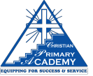

Our Bishop
Dr. Rodger Samuel is popularly known for his bold faith and uncompromising stand for the Gospels of Jesus Christ, and carries a deep love for the miraculous teachings and works of our Lord.
Dr. Rodger Samuel is popularly known for his bold faith and uncompromising stand for the Gospels of Jesus Christ, and carries a deep love for the miraculous teachings and works of our Lord.
Our vision is to reveal the full glory of God to the world, through the creation of a self-sufficient entity, dedicated to evangelizing the lost and equipping them for effective service unto God.
The distinguishing mark of Christian Restoration Centre is LOVE, for Jesus himself said:
"By this all men will know that you are my disciples; if you love one another"
1 John 13:35
"And now these remain: Faith, hope and love, but the greater of these is love"
1 Corinthians 13:13
"...Fear God and keep his commandments for this is the whole duty of man."
Ecclesiastes 12:13
In our daily walk with God we are guided by the pure Word of God. Indeed we believe that "once God says it, that does it." This therefore means that great emphasis is placed on Bible reading, meditation, study and teaching.
"For the Lord himself will come down from heaven, with a loud command, with the voice of the archangel and with the trumpet call of God, and the dead in Christ will rise first. After that, we who are still alive and are left will be caught up together with them together in the clouds to meet the Lord in the air. And so we will be with the Lord forever."
1 Thessalonians 4:16 & 17
Christian Restoration Centre emerged in November 1995, out of the earnest, diligent and spirit-led study of the Holy Bible by a body of believers who had been worshipping together for three years prior.
These believers had always been, and continue to be, driven by the need to ensure that all their beliefs are in accordance to the perfect will of God as revealed in the Holy Bible.
In October of 1995, this body of believers were convicted of the divine purpose for their assembling. As such, the name "Christian Restoration Centre" was chosen.
In all our operations, we are guided by the Word of God as revealed in the Holy Bible.
Christian Primary Academy or CPA, as it is commonly called, is an educational institution whose sole purpose is to develop their stakeholders' usefulness to God, mankind and for themselves. CPA's balance of Christian values, small classes and academic successes, have been the main attraction to our school. We are blessed to have a cadre of stakeholders who view the institution as an extension of their ministry and service to God.